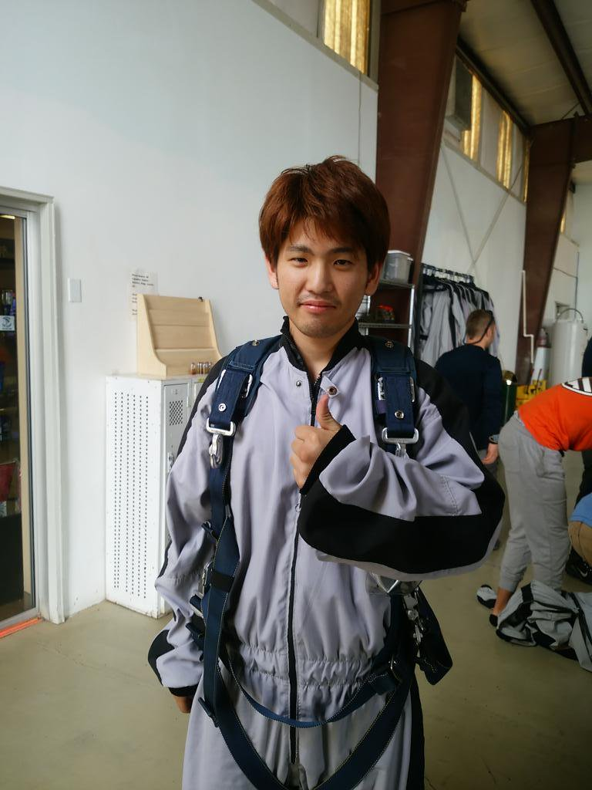

会社概要
結婚式では「なりそめストーリー」や「友人から新郎新婦へ送るムービー」などで余興でスライドショーが使われることが多いと思います。
私たちはそのスライドショーを作るときに使う「漫画素材の提供」と、「ストーリーや演出などの総合的なアドバイス」をさせて頂きたいと考えています。
例えば結婚式でなりそめストーリーをスライドショーを作る場合、写真だけでは本当に欲しい場面がなかったり、しっかりしたストーリーを作るのが難しかったりすると思いますが、
漫画を使うことができれば、「出会いの瞬間」、「お互いの思い」、「友人との相談」などのシーンを描くことができ、よりドラマチックでみんなが楽しめるものにすることで
より素晴らしい結婚式となるようなお手伝いができればと思っています。
